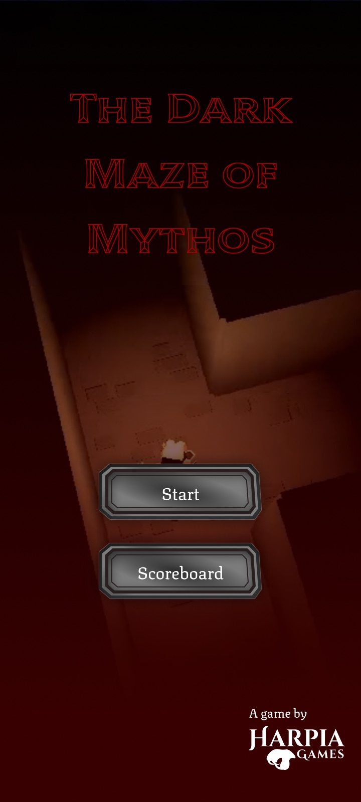

Botão de metal
Moldura de aço chanfrada com face escovada e rótulo serifado branco. É o único estilo de botão, usado em todas as ações dos menus.
Usado em: menu, pausa, derrota, vitória, placar
Uma fuga em visão de cima de um Minotauro que decorou o labirinto. A tocha é seus olhos e também seu farol. Esta página mostra a interface: as telas, o UI kit e um protótipo jogável.


A cena é quase preta, então o HUD toma emprestado o visual do mundo: placas de metal frio com brilho vermelho, nunca painéis claros que entregariam o jogador.
Todo controle fica no terço inferior, onde o polegar descansa: um direcional flutuante e duas ações da tocha. Os contadores ficam no topo, longe das mãos.
Cartas de 6, tempo e fósforos são as únicas leituras do HUD. Cada um tem sua placa, e um olhar mostra a partida inteira.
Títulos vermelhos com contorno e um degradê vinho dão o tom do menu e da derrota. O degradê azul-petróleo da vitória é o único momento frio e calmo do jogo.
As telas mobile em que o protótipo se baseia, na ordem de uma partida. Clique em qualquer imagem para ampliar.
O título, Iniciar e Placar sobre o herói parado. Ao tocar em Start vem a introdução, depois a câmera sai da vista 3D para a de cima e a partida começa.
A pausa escurece o HUD em vermelho e oferece Resume ou Quit. Os dois finais têm climas distintos: a fuga é azul-petróleo frio, vencer o Minotauro continua vermelho escuro.
Posição, data e tempo das doze melhores fugas, em uma moldura de metal sobre o menu vermelho.
Os componentes com que as telas são montadas. O protótipo os reconstrói em código a partir destas referências.
Moldura de aço chanfrada com face escovada e rótulo serifado branco. É o único estilo de botão, usado em todas as ações dos menus.
Placas escuras com borda prateada. O tempo usa a fonte de exibição com dígitos em anel e dois-pontos vermelho; cartas e fósforos usam a fonte de texto com um ícone.
Um direcional flutuante com botão facetado e brilho vermelho. O arco vermelho mostra a direção pressionada: cima, direita, baixo ou esquerda.
Painel grafite com moldura cinza e três colunas centralizadas. A serifa leve mantém doze linhas legíveis.
Cartas coletadas (uma carta vermelha com alvo) e o contador de fósforos com um fósforo aceso, no vermelho da chama.
#7A0000 títulos, cartas#2D0000 degradê do menu#080303 cena#8A8A8A molduras#19A79A fugaTilt Prism para títulos e cronômetro, uma fonte de exibição prismática que parece entalhada. Texturina para botões, contadores e placar, uma serifa robusta que segue legível em tamanhos pequenos.
Como uma partida passa pelas telas. Pausa e Retry sempre levam a uma partida nova ou retomada, nunca a um beco sem saída.
O protótipo roda no labirinto do documento de game design, reconstruído tile a tile a partir do mapa. Branco é corredor e cinza é uma câmara maior; a entrada é a saída curta embaixo e a saída com luz do sol é a de cima. Cartas e fósforos são espalhados ao acaso a cada partida.
Uma versão jogável de toda a interface, não só cliques. Um pequeno labirinto, uma tocha que ilumina apenas o que está perto, um Minotauro em patrulha e todas as telas acima ligadas na ordem do fluxo.
Game design e UI/UX: David Smith.
Desenvolvimento: Bruno Poor.
Estúdio: Harpia Games, feito para uma game jam com o tema “Monster Escape”.
As regras e a história estão no documento de game design.
O quick-time event do ataque do Minotauro, a invocação de Exodia e a câmera lateral estão no design, mas não neste protótipo. Esconderijos e armadilhas também ficaram de fora, e os corredores de 1 tile ainda não têm espaço para a câmera lateral.